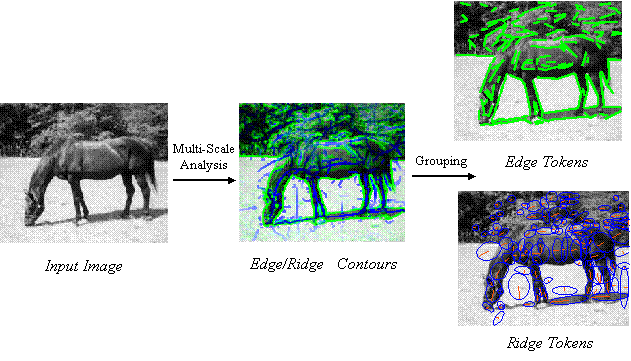

Scale-Invariant Primal Sketch Tokens
|  |
Introduction
This code is my implementation of T. Lindeberg's scale-invariant primal sketch. I
have been using this over the last years in my research on object detection and shape modeling.
The code takes as input a grayscale image and convolves it with Gaussian kernels of
increasing size. Using this scale-space, edge and ridge contours are found as maxima in space
and scale of appropriate differential operators. These contours are then post-processed to
obtain a sparse set of straight line segments.
Apart from computing T. Lindeberg's primal sketch, additional functionalities that are
generally useful include:
- Efficient Gaussian Filtering with a mex implementation of R. Deriche's IIR Filters.
- A line tracking algorithm along the lines of Nevatia and Babu.
- The line segmentation algorithm used in D. Lowe's SCEPRO system.
Related Publications
I. Kokkinos and A. Yuille,
HOP: Hierarchical Object Parsing,
Proc.
IEEE Conf. on Computer Vision and Pattern Recognition (CVPR), 2009.
[pdf]
[bib]
I. Kokkinos and A. Yuille,
Scale Invariance without Scale Selection,
Proc.
IEEE Conf. on Computer Vision and Pattern Recognition (CVPR), 2008.
[pdf]
[bib]
I. Kokkinos and A. Yuille,
Unsupervised Learning of Object Deformation Models,
Proc. IEEE Int'l. Conf. on Computer Vision (ICCV), 2007.
[pdf]
[supplement]
[slides]
[bib]
I. Kokkinos, P. Maragos and A. Yuille,
Bottom-Up and Top-Down Object Detection Using Primal
Sketch Features and Graphical Models,
Proc.
IEEE Conf. on Computer Vision and Pattern Recognition (CVPR), 2006.
[pdf]
[bib]
Edge Detection and Ridge Detection with Automatic Scale Selection ,
International Journal of Computer Vision, v.30 n.2, p.117-156, Nov. 1998
Terms of use
If you use this code in your research, please cite our CVPR 2006 paper.
Downloads
Code, readme, documentation: PS_primal_sketch.zip.
Usage, demos etc: readme.pdf.